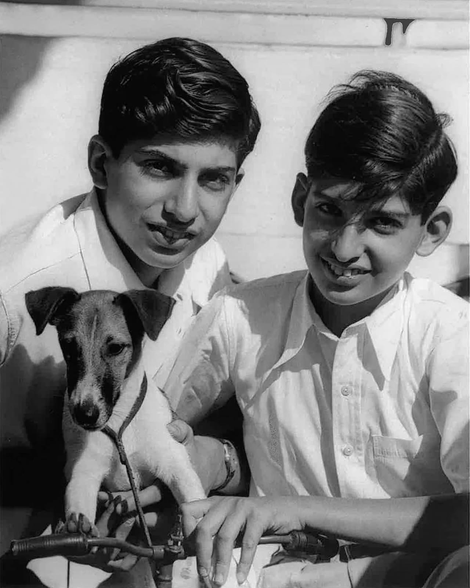

Ratan Tata

Ratan Tata, in full Ratan Naval Tata, (born December 28, 1937, Bombay [now Mumbai], India), Indian businessman who became chairman (1991–2012 and 2016–17) of the Tata Group, a Mumbai-based conglomerate.
A member of a prominent family of Indian industrialists and philanthropists (see Tata family), he was educated at Cornell University, Ithaca, New York, where he earned a B.S. (1962) in architecture before returning to work in India. He gained experience in a number of Tata Group businesses and was named director in charge (1971) of one of them, the National Radio and Electronics Co. He became chairman of Tata Industries a decade later and in 1991 succeeded his uncle, J.R.D. Tata, as chairman of the Tata Group.
Tata is a supporter of education, medicine and rural development, and considered a leading philanthropist in India. Tata supported University of New South Wales Faculty of Engineering to develop capacitive deionization to provide improved water for challenged areas.
Tata Hall at the University of California, San Diego (UC San Diego), opened in November 2018, houses facilities for the biological and physical sciences and is the home of the Tata Institute for Genetics and Society. The Tata Institute for Genetics and Society is a bi-national institution that coordinates research between UC San Diego and research operations in India to assist in societal and infrastructure development in the area of combating vector-borne diseases. Tata Hall is named in recognition of a generous $70 million gift from Tata Trusts.


Ratan Tata was born in Bombay, now Mumbai, during the British Raj, on 28 December 1937. He is the son of Naval Tata, who was born in Surat and later adopted into the Tata family, and Sooni Tata, the niece of Tata group founder Jamsetji Tata. Tata's biological grandfather, Hormusji Tata, was a member of the Tata family by blood. In 1948, when Tata was 10, his parents separated, and he was subsequently raised and adopted by Navajbai Tata, his grandmother and widow of Ratanji Tata. He has a younger brother Jimmy Tata[8] and a half-brother, Noel Tata, from Naval Tata's second marriage with Simone Tata, with whom he was raised. His first language is Gujarati.
He studied at the Campion School, Mumbai till the 8th class. After which, he studied at the Cathedral and John Connon School in Mumbai, the Bishop Cotton School in Shimla, and the Riverdale Country School in New York City, which he graduated from in 1955. After graduating from high school, Tata enrolled in Cornell University, from which he graduated with a bachelor's degree in architecture in 1959. In 2008, Tata gifted Cornell $50 Million, becoming the largest international donor in the university’s history.
In 2014, Tata Group endowed the Indian Institute of Technology, Bombay and formed the Tata Center for Technology and Design (TCTD) to develop design and engineering principles suited to the needs of people and communities with limited resources. They gave ₹950 million to the institute which was the largest ever donation received in its history.
Tata Trusts under the Chairmanship of Ratan Tata provided a grant of ₹750 million to the Centre for Neuroscience, Indian Institute of Science to study mechanisms underlying the cause of Alzheimer's disease and to evolve methods for its early diagnosis and treatment. This grant was to be spread over 5 years starting in 2014.
Tata Group, under the leadership of Ratan Tata formed the MIT Tata Center of Technology and Design at Massachusetts Institute of Technology (MIT) with a mission to address the challenges of resource-constrained communities, with an initial focus on India
Ratan Tata received the Padma Bhushan in 2000 and Padma Vibhushan in 2008, the third and second highest civilian honours awarded by the Government of India. Along with national civilian honours, Tata has also received various state civilian honours like 'Maharashtra Bhushan' in 2006 for his huge work in the public administration in Maharashtra and 'Assam Baibhav' in 2021 for his exceptional contribution towards furthering cancer care in Assam.